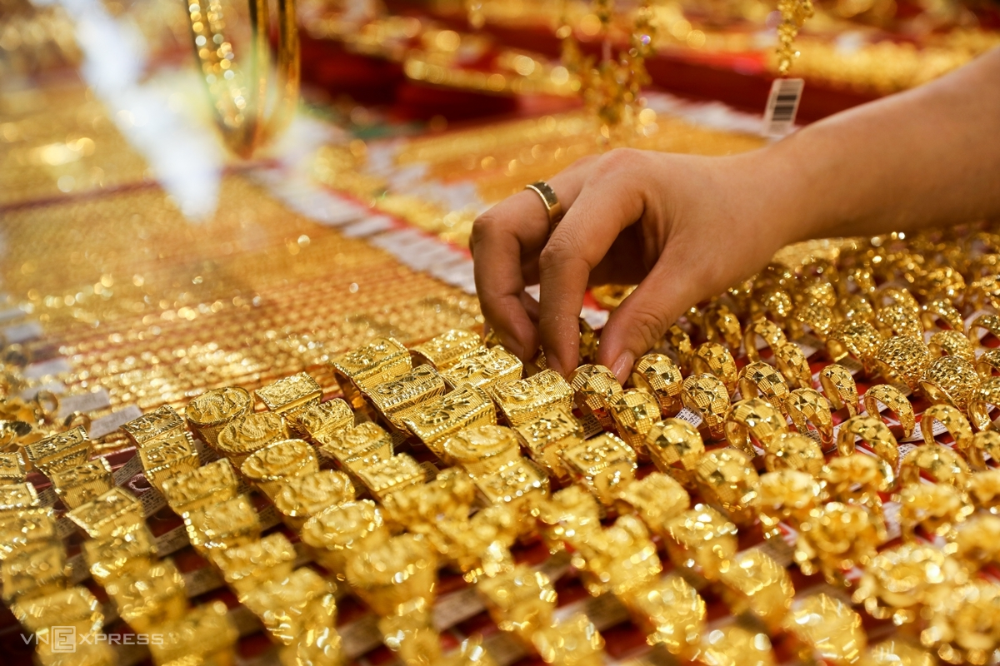

Đăng nhập
Đăng ký
Trang chủ
Kinh tế
Chính trị
Văn hóa
Xã hội
Nghệ thuật
Thể thao
Pháp luật
Giải trí
Sức khỏe
Tư vấn
TRANG CHỦ
KINH DOANH
Doanh nhân
Tài chính
Bất động sản
Khởi nghiệp
Doanh nghiệp
Ngân hàng
Chứng khoán
Giá vàng hôm nay 17/10: Bất ngờ lao dốc mạnh cuối tuần, dân chớp thời cơ lướt sóng
Sáng nay giá vàng quay đầu giảm khi cơ hội mờ dần về một thỏa thuận kích thích kinh tế do Covid-19.
Kiếm vài chục triệu đô la nhờ loại quả dân dã mọc khắp Việt Nam
Từ làng chài nhỏ, nơi này giờ giàu "khủng" mỗi người thu nhập gần 700 triệu/năm
Giá vàng SJC mất gần 1 triệu đồng mỗi lượng

Các nhà vàng sáng nay đồng loạt giảm 850.000-900.000 đồng mỗi lượng, xuống 55,5-56,4 triệu đồng khi thị trường kim loại quý thế giới biến động mạnh.
Giá vàng SJC mất gần 1 triệu đồng mỗi lượng
Các nhà vàng sáng nay đồng loạt giảm 850.000-900.000 đồng mỗi lượng, xuống 55,5-56,4 triệu đồng khi thị trường kim loại quý thế giới biến động mạnh.
Giá vàng SJC mất gần 1 triệu đồng mỗi lượng
Các nhà vàng sáng nay đồng loạt giảm 850.000-900.000 đồng mỗi lượng, xuống 55,5-56,4 triệu đồng khi thị trường kim loại quý thế giới biến động mạnh.
Giá vàng SJC mất gần 1 triệu đồng mỗi lượng
Các nhà vàng sáng nay đồng loạt giảm 850.000-900.000 đồng mỗi lượng, xuống 55,5-56,4 triệu đồng khi thị trường kim loại quý thế giới biến động mạnh.
Giá vàng SJC mất gần 1 triệu đồng mỗi lượng
Các nhà vàng sáng nay đồng loạt giảm 850.000-900.000 đồng mỗi lượng, xuống 55,5-56,4 triệu đồng khi thị trường kim loại quý thế giới biến động mạnh.
Giá vàng SJC mất gần 1 triệu đồng mỗi lượng
Các nhà vàng sáng nay đồng loạt giảm 850.000-900.000 đồng mỗi lượng, xuống 55,5-56,4 triệu đồng khi thị trường kim loại quý thế giới biến động mạnh.
TIÊU ĐIỂM
Thương chiến Mỹ - Trung dưới thời ông Biden sẽ ra sao?
Vượt qua cú tụt bất ngờ, vàng hướng lên 60 triệu đồng/lượng
“Nóng” chất vấn 10km đường có 2 trạm thu phí
Thủ tướng: Sắp vận hành đường sắt Cát Linh - Hà Đông sau nhiều năm chậm trễ
TÀI CHÍNH - ĐẦU TƯ
Thái độ với Trung Quốc của ông Biden và ảnh hưởng tới kinh tế Việt Nam
Trước khả năng ông Joe Biden sẽ trở thành Tổng thống thứ 46 của nước Mỹ, vấn đề được nhiều người quan tâm là thái độ với Trung Quốc của ông Biden sẽ ra sao và kinh tế Việt Nam sẽ chịu ảnh hưởng gì?
Thái độ với Trung Quốc của ông Biden và ảnh hưởng tới kinh tế Việt Nam
Thời đến cản không kịp, đại gia đang ngồi tù tài sản vẫn vọt tăng bất ngờ
Bộ Công Thương đã chuyển toàn bộ cổ phần Sabeco cho SCIC
TÀI CHÍNH - ĐẦU TƯ
Thái độ với Trung Quốc của ông Biden và ảnh hưởng tới kinh tế Việt Nam
Trước khả năng ông Joe Biden sẽ trở thành Tổng thống thứ 46 của nước Mỹ, vấn đề được nhiều người quan tâm là thái độ với Trung Quốc của ông Biden sẽ ra sao và kinh tế Việt Nam sẽ chịu ảnh hưởng gì?
Thái độ với Trung Quốc của ông Biden và ảnh hưởng tới kinh tế Việt Nam
Thời đến cản không kịp, đại gia đang ngồi tù tài sản vẫn vọt tăng bất ngờ
Bộ Công Thương đã chuyển toàn bộ cổ phần Sabeco cho SCIC